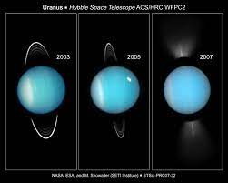

About Uranus
Uranus is a very cold and windy planet. It is surrounded by faint rings, and more than two dozen small moons as it rotates at a nearly 90-degree angle from the plane of its orbit. This unique tilt makes Uranus appear to spin on its side.
Uranus is blue-green in color due to large amounts of methane, which absorbs red light but allows blues to be reflected back into space. The atmosphere is mostly hydrogen and helium, but also includes large amounts of water, ammonia and methane.
Astronomer William Herschel tried unsuccessfully to name his discovery Georgium Sidus (George's star in Latin) after his patron, England's King George III. Instead, the planet was eventually named for Uranus, the Greek god of the sky, who was also the father of Kronos (or Saturn in Roman mythology).
Only one spacecraft has explored the ice giant up close, NASA's Voyager 2. In January 1986, Voyager 2 made a close approach to Uranus, snapping images of the planet and some its moons. A new mission to Uranus was one of the highest priority objectives outlined in the Planetary Science and Astrobiology Decadal Survey 2023-2032. The possibility of a flagship mission to Uranus will be a focus of planetary science at NASA in the years to come.
The new decadal survey shall broadly canvas the field of space- and ground-based planetary science to determine the current state of knowledge and to identify the most important scientific questions to be addressed during the interval 2023-2032. For the first time, this decadal survey will also study aspects of planetary defense, now that this activity is fully incorporated as an element of NASA’s planetary science endeavors. The survey will also take into account planned human space exploration activities. In addition, the survey and report shall address relevant programmatic and implementation issues of interest to NASA and the National Science Foundation (NSF). Since the content and structure of the program portfolios of the two agencies are distinct from one another, implementation and investment recommendations specific to each agency should be elaborated in separate sections of the final report. This will ensure that the report’s investment guidance will be clearly addressed to the appropriate agency.
Read More
Read Less
